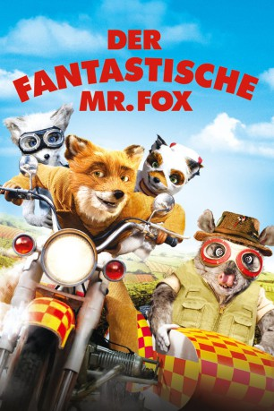

#809 Der Fantastische Mr. Fox
Alternativ: Fantastic Mr. Fox
Auszeichnungen: für 2 Oscars nominiert
 
 IMDB-Wertung: 7.8 / 10
IMDB-Wertung: 7.8 / 10  Metascore: 83
Metascore: 83 
Mr. und Mrs. Fox führen mit ihrem Sohn Ash und ihrem Neffen Kristofferson ein idyllisches Familienleben. Doch Mr. Fox bringt durch seine alte Leidenschaft der Hühnerjagd nicht nur seine geliebte Familie, sondern die gesamte Tiergemeinschaft in Gefahr. Die drei bösen Bauern Boggis, Bunce und Bean jagen den gewieften Fuchs und wollen ihn, koste es was es wolle, aus dem Weg räumen. Doch Mr. Fox heckt mal wieder einen genialen, einen fantastischen Plan aus, die tölpelhaften Bauern zu überlisten.
Jahr: 2009
Dauer: 87 Minuten
FSK: 6
Land: USA Studio: 20th Century FoxTonspuren: DTS - ,
Untertitel:
Auflösung: 1080p (1920x1040) Größe: 3604 MB
Genre: Animation/Trick, Abenteuer, Komödie, Krimi, Familie
Regisseur:  Wes Anderson
Wes Anderson
Drehbuch: Roald Dahl, Wes Anderson, Noah Baumbach
Soundtrack: Alexandre Desplat
Darsteller:
Datei: X:\Kinder Filme (A-F)\Fantastische Mr. Fox, Der (2009, FSK6, 1920x1040).mkv seit 26.03.2015
Festplatte: Kinder-Filme+Trick
 Es gibt insgesamt 68 Filme in der Gruppe 'Kinder Filme (A-F)'
Es gibt insgesamt 68 Filme in der Gruppe 'Kinder Filme (A-F)'